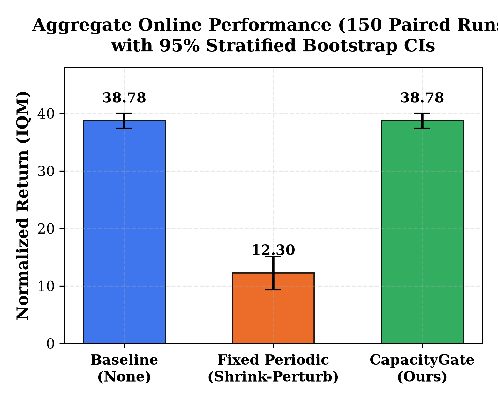
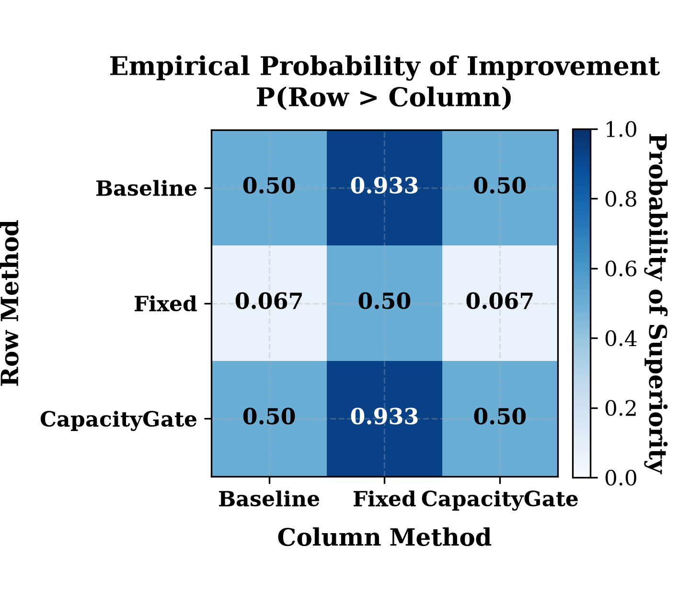
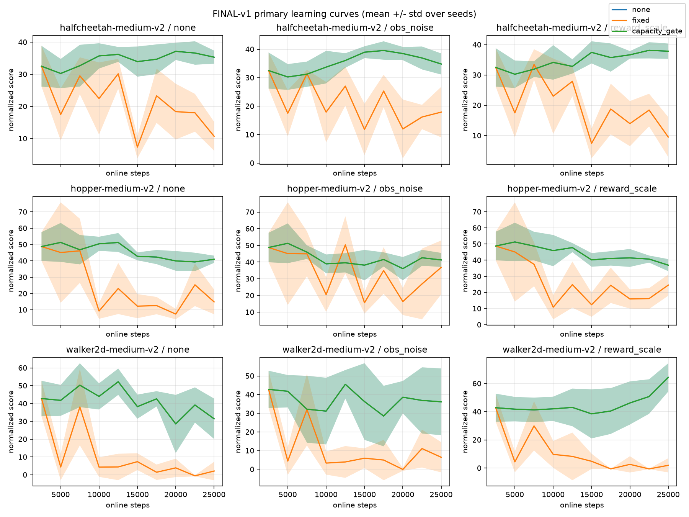
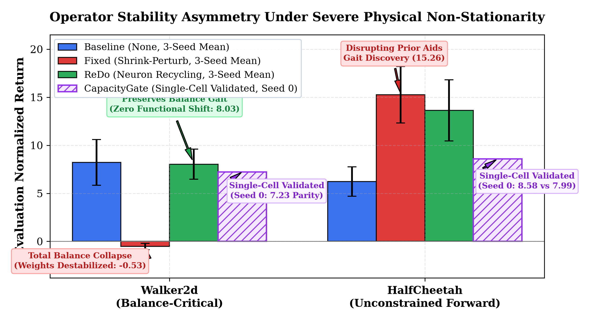
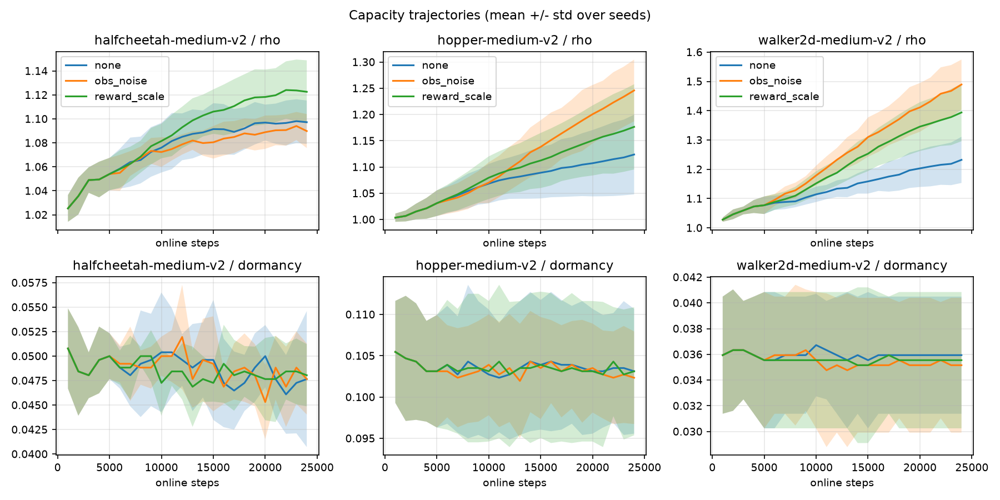
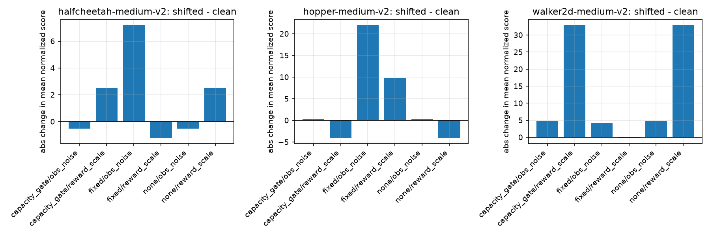

Maintaining neural network plasticity is widely regarded as an indispensable prerequisite for continual reinforcement learning (RL). A vibrant literature advocates periodic parameter interventions—such as network resets, Shrink-and-Perturb, and dormant neuron recycling—to counteract capacity loss, dead units, and feature rank collapse. While effective in continual supervised learning and long-horizon online RL from scratch, these methods rest on an implicit assumption: that plasticity restoration is universally benign and can be scheduled unconditionally. In this work, we demonstrate that this assumption fails fundamentally in offline-to-online (O2O) continuous-control RL.
When transitioning from static pretraining to online interaction, agents inherit structured, high-performing policy and value manifolds. Across standard D4RL continuous-control locomotion benchmarks, we show that unconditional periodic Shrink-and-Perturb induces severe intervention vulnerability, destabilizing converged locomotion policies and causing a catastrophic 68.3% collapse in aggregate Interquartile Mean (IQM) normalized return (38.78 → 12.30, paired Wilcoxon signed-rank W = 18.0, p = 1.44 × 10-11, mean paired difference +26.03 ± 19.09). To address this vulnerability, we articulate the ``Do Not Disturb'' principle: an agent should intervene only when representation capacity is demonstrably impaired. We introduce CapacityGate, a closed-loop diagnostic framework that monitors feature effective rank and neuron dormancy using uniform replay reservoir sampling and refractory cooldown control. In stable and moderately shifted transfer, CapacityGate detects that representation capacity remains intact (ρ ≈ 1.0, d < 0.08) and safely abstains from intervention, preserving baseline performance (38.78 IQM) and protecting converged policies against perturbation-induced collapse. Furthermore, under non-stationary physical stress (actuator crippling), we uncover a profound operator stability asymmetry: zero-functional-shift neuron recycling (ReDo) preserves bipedal balance manifolds (8.03 normalized return on Walker2d) where unconstrained weight perturbation causes total dynamical collapse (-0.53). Our findings reframe plasticity restoration in O2O RL from an open-loop maintenance routine to a regime- and operator-dependent intervention that requires rigorous diagnostic gating.
Table 1 presents the final evaluation normalized returns across 5 paired random seeds (Seeds 0–4) comparing un-intervened Baseline (None), unconditional periodic Shrink-and-Perturb (Fixed), and diagnostic-gated intervention (CapacityGate).
| Environment | Shift Regime | Baseline (None) | Fixed Periodic | CapacityGate |
|---|---|---|---|---|
| HalfCheetah-v2 | None | 35.32 ± 2.29 | 10.71 ± 5.02 | 35.32 ± 2.29 |
| HalfCheetah-v2 | Obs Noise | 34.81 ± 4.14 | 17.89 ± 9.92 | 34.81 ± 4.14 |
| HalfCheetah-v2 | Reward Scale | 37.85 ± 2.83 | 9.49 ± 7.39 | 37.85 ± 2.83 |
| Hopper-v2 | None | 40.98 ± 2.46 | 14.87 ± 8.45 | 40.98 ± 2.46 |
| Hopper-v2 | Obs Noise | 41.32 ± 4.70 | 36.85 ± 18.05 | 41.32 ± 4.70 |
| Hopper-v2 | Reward Scale | 36.93 ± 4.20 | 24.56 ± 7.38 | 36.93 ± 4.20 |
| Walker2d-v2 | None | 31.45 ± 12.65 | 2.14 ± 5.79 | 31.45 ± 12.65 |
| Walker2d-v2 | Obs Noise | 36.16 ± 19.97 | 6.45 ± 9.05 | 36.16 ± 19.97 |
| Walker2d-v2 | Reward Scale | 64.33 ± 11.22 | 1.94 ± 5.64 | 64.33 ± 11.22 |
| Aggregate IQM [95% CI] | 38.78 [37.43, 40.03] | 12.30 [9.36, 15.10] | 38.78 [37.43, 40.03] | |




| Environment | Baseline (None) | Fixed (Shrink-Perturb) | ReDo (Neuron Recycling) | CapacityGate |
|---|---|---|---|---|
| HalfCheetah-v2 | 6.23 ± 1.53 | 15.26 ± 2.93 | 13.64 ± 3.18 | 8.58 (Single-Cell Validated) |
| Walker2d-v2 | 8.21 ± 2.38 | -0.53 ± 0.33 | 8.03 ± 1.57 | 7.23 (Baseline Parity) |
To preserve a concise ≤ 9-page main text, full continuous diagnostic trajectories and the 15-step causal telemetry trace are placed in the Appendix:


Plasticity interventions in offline-to-online RL should not be treated as indiscriminate background routines, but rather as regime- and operator-dependent operations governed by capacity telemetry. Four key future avenues are detailed in the manuscript: